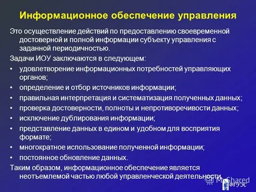
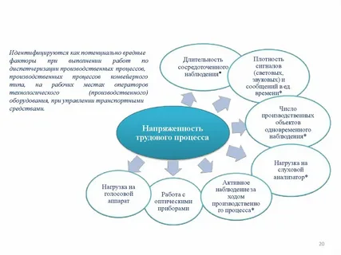
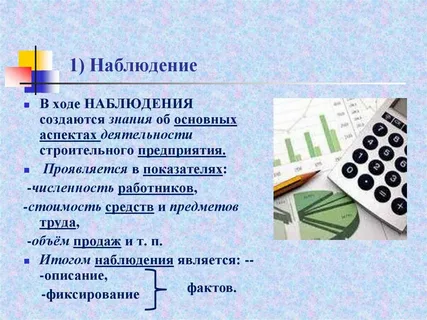

Информационное обеспечение (ИО) — это совокупность методов, средств и процедур, направленных на сбор, обработку, хранение и передачу данных.

В зависимости от цели посещения данной страницы сайта, Вы можете либо быстро ознакомиться с программным обеспечением для автоматизации своего бизнеса, либо сразу же перейти на страницу цены или контактных данных, чтобы купить продукт.

Выявление и регистрация состояния управляемых параметров и их отклонения от заданных режимов — одна из основных функций информационного обеспечения (ИО)
